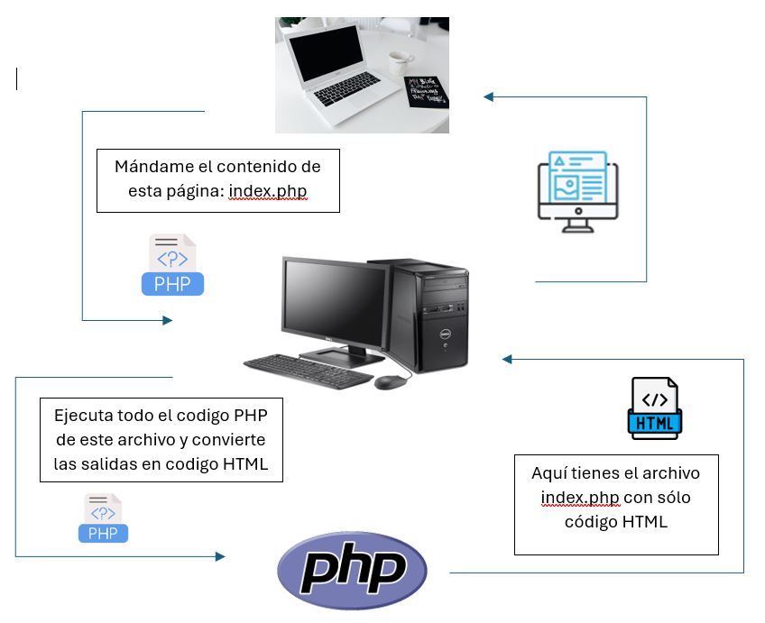

| Concepto | JavaScript (Frontend) | PHP (Backend) |
|---|---|---|
| Etiquetas | <script> | <php ... ?> |
| Variables | let, const | $variable |
| Salida | console.log() o DOM | echo |
| Consatenación | + | . |
| Tipado | Débil | Débil, pero con tipado estricto opcional |
| Estructura | if, while, for | Idénticas (con muy pocos cambios) |
JS se carga una vez y vive en la RAM del navegador mientras el usuario está en la página
El ciclo de vida de un script PHP es de milisegundos PHP ejecuta el código en el servidor genera el HTML envía y llega a su fin, muere
PHP no es un lenguaje que se ejecute en el navegador del usuario. Es un lenguaje del lado del servidor. Esto significa que cuando alguien entra en tu web de Spagnolo, ocurre una cadena de eventos invisible:

Dato clave: El navegador del usuario recibe HTML, CSS y JS, pero PHP nunca llega al navegador. El código fuente de tu PHP se queda "en casa", en el servidor.
Si intentas sumar una cadena con un número, PHP intenta adivinar lo que quieres y lo convierte automáticamente. A esto los profesionales lo llamamos "Type Juggling" (malabarismo de tipos).
Pero, ¡cuidado! En un entorno profesional (como la empresa donde trabajarás), el "Type Juggling" es la fuente número uno de bugs catastróficos.
echo 5 + "5"; // Resultado: 10 (PHP adivinó que querías sumar)
echo 5 + "5 coches"; // Resultado: 10 (PHP extrajo el 5 inicial y descartó el texto)
Esto es útil para un script rápido, pero peligroso si estás calculando impuestos o saldos bancarios de clientes.
Aunque PHP no te obliga a declarar tipos para variables sueltas (como let x = 5), desde PHP 7 y 8, el lenguaje permite (y exige en entornos profesionales) declarar tipos en argumentos de funciones y retornos.
Así es como escribimos PHP profesionalmente hoy:
// Definimos que el nombre DEBE ser string y la edad un int
// Y la función DEBE devolver un string
function saludar(string $nombre, int $edad): string {
return "Hola " . $nombre . ", tienes " . $edad;
}
echo saludar("Alfonso", 25); // Perfecto
echo saludar("Ana", "veinticinco"); // ¡ERROR! PHP lanzará una excepción (Fatal Error)
IntelliSense: Si pones los tipos (string $nombre), tu VS Code sabrá qué es esa variable y te dará autocompletado inteligente. Sin tipos, VS Code está "a ciegas".
Depuración: Si cometes un error enviando un texto donde debería ir un número, PHP te detendrá en seco. Si no pones tipos, el error será silencioso y tu base de datos recibirá datos corruptos.
Regla de oro del tipado en PHP
declare(strict_types=1); para obligar a PHP a ser siempre estricto con los tipos. Esto te ahorrará horas de bugs."